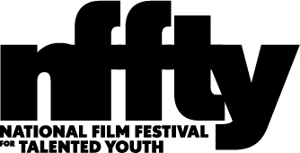

Carlos Aguilar
New York, NY
Originally from Mexico City, Carlos Aguilar was chosen as one of 6 young film critics to partake in the first Roger Ebert Fellowship organized by RogerEbert.com, the Sundance Institute and Indiewire in 2014. Aguilar’s work has appeared in prestigious publications such as The Wrap, Indiewire, Vulture, RogerEbert.com, MovieMaker Magazine, Remezcla Filmmaker Magazine, Variety Latino, Slate, Bustle, Americas Quarterly, among others.
Besides his work in journalism, Aguilar regularly works as a screener for the Sundance Film Festival and a screenplay reader for Sundance’s Screenwriters Lab. Carlos Aguilar has also been on the jury at renowned festivals such the Palm Springs International Film Festival, the Gasparilla International Film Festival, the Louisiana International Film Festival, and the Los Angeles Indian Film Festival.
Aguilar currently co-hosts One Week Only, a weekly podcast highlighting independent and international cinema. He also regularly participates in panel discussions about the importance of people of color in film criticism and his experience as a DACA recipient working in the film industry.

Evan Crean
Somerville, MA
Evan Crean is a contributing writer and editor for NewEnglandFilm.com. He is also co-author of the lighthearted self-help book Your ’80s Movie Guide to Better Living and co-host of the weekly film podcast Spoilerpiece Theatre. Additionally, Evan is the marketing director for Boston Reel, a site dedicated to Boston’s independent film culture. Previously, he contributed hundreds of movie reviews and celebrity interviews to Starpulse.com. You can follow him on his site Reel Recon or find him on Twitter as @reelrecon.

Joyce Kulhawik
Boston, MA
Joyce Kulhawik, best known as the Emmy Award-winning arts and entertainment critic for CBS Boston (WBZ-TV 1981-2008), is currently lending her expertise as an arts critic/advocate, motivational speaker, and cancer crusader. Kulhawik is President of the Boston Theater Critics Association, a member of the Boston Society of Film Critics and Boston Online Film Critics Association. Kulhawik has covered local and national events from Boston to Broadway to Hollywood, reporting live from the Oscars, the Emmys, and the Grammys. Nationally, Kulhawik has co-hosted syndicated movie-review programs with Roger Ebert and Leonard Maltin. Look for her arts a entertainment reviews online at JoycesChoices.com.
Jaleesa Lashay
Los Angeles, CA
Jaleesa Lashay Diaz is a journalist and media correspondent in Los Angeles. A growing young woman who prides herself on speaking her mind, Jaleesa has already established herself as a mover in the entertainment industry. She has a variety of experience ranging from press junkets to red carpet premieres. She has also served as a senior correspondent in the press room during awards season, including for the Academy Awards.
Jaleesa is committed to challenging and having honest conversations around diverse representation in Hollywood. In January, she asked a question to Sterling K. Brown that resulted in a viral video viral video and multiple pickup, including from ABC News. This question ignited the many conversations around diversity in film criticism this year. She also broke the story with Variety that announced Hollywood’s commitment to increase representation onsite at Sundance and TIFF. As a result, she was invited by TIFF to attend the festival and recognized as a “rising voice.”
A force to be reckoned with, she has the passion and personality to grab attention in a crowded room—and nothing will stop her.

Tom Meek
Cambridge, MA
Tom Meek is the President of the Boston Society of Film Critics. He is a longtime contributor at The Boston Phoenix, Cambridge Day, the WBUR ARTery, and the Charleston City Paper. He has also appeared regularly on New England Cable News. His byline can also be found at E!-Online, Cineaste, Film Threat, and Web Del-Sol. Tom likes a harmonious universe and rides his bike everywhere. You can follow him on Twitter @TBMeek3.
Claudia Puig
Los Angeles, CA
Claudia Puig is president of the Los Angeles Film Critics Association and a nationally recognized entertainment journalist. Currently a critic for NPR’s Film Week and contributor to NPR’s Morning Edition, she was USA Today’s film critic for 18 years. Prior to that she was a Los Angeles Times staff writer for 11 years. Claudia is program director for film festivals in Chapel Hill, North Carolina and Mendocino, California, and previously was program director for a film festival in Napa Valley. Formerly a speechwriter and diversity consultant for the Academy of Motion Picture Arts and Sciences, she is currently a cultural consultant for film studios and is much in demand as a moderator for entertainment industry Q&As. She also teaches a college class on Diversity in the Media. A native Spanish speaker, Claudia studied at Universidad Ibero-Americana in Mexico City. She has a B.A. in Communications Studies from UCLA and an M.A. in Communications from USC’s Annenberg School. She was recently featured in the Los Angeles Times as one of 14 film critics making media more inclusive and is the winner of the African-American Film Critics Association’s Roger Ebert Award for Excellence in Film Criticism.
Mike Sargent
New York, NY
Mike Sargent is the Co-Founder and Co-President of the Black Film Critics Circle (BFCC), chief film critic for WBAI Radio and Host of its weekly daytime film review program, Reelworld, and popular late night radio show, Niteshift. Mike was also the host & creator of Arise On Screen, Arise Network’s weekly global movie review & interview show and was the first African-American hosted film review television show ever. Additionally, Mike writes for Scriptmag.com and is a frequent guest critic appearing on PBS Newshour, Fox Business News, Al Jazeera, Yahoo finance, Pix11 and others.
Gary K. Wolf
Brookline, MA
Gary Wolf is an award winning science fiction and fantasy writer. He created the concept of Toontown, bringing to life its beloved inhabitants: Roger Rabbit, Roger’s va-va-voom mate, Jessica Rabbit, Baby Herman, and hard-boiled private eye, Eddie Valiant. Wolf’s first Toontown novel, Who Censored Roger Rabbit? became a visual reality in Disney/Spielberg’s blockbuster film, Who Framed Roger Rabbit? The film won four Academy Awards and grossed $1 billion dollars. Walt Disney Pictures has purchased film rights to his second Toontown novel, Who P-p-p-plugged Roger Rabbit? He recently published a third Toontown novel, Who Wacked Roger Rabbit?
Gen Z Critics is proud to partner with:
